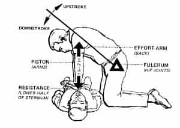
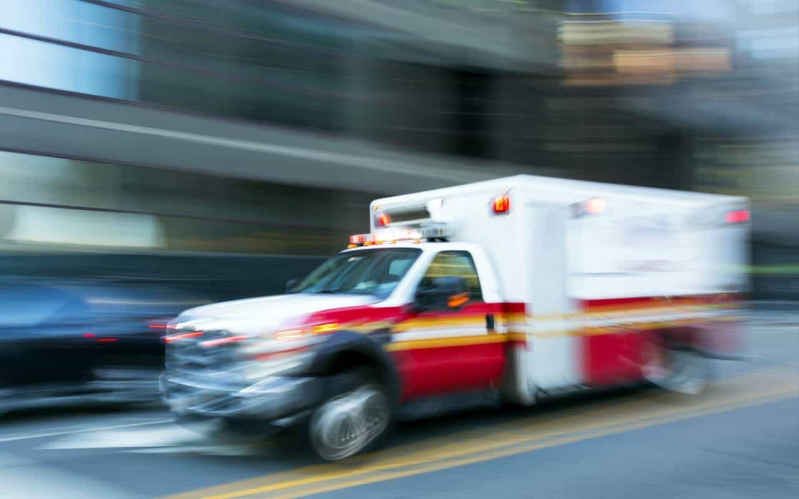
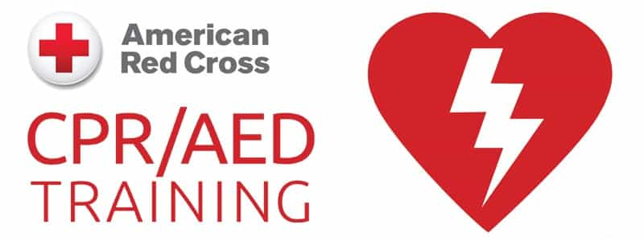
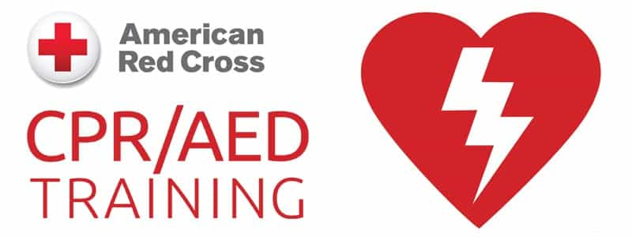

Thomas is a young, Asian-American man with aspirations of becoming a physician. As such he is braving the gauntlet of university, medical school, and medical residency in order to do so. He has also started learning how to make his own website.


It’s often easy to imagine emergencies as the exclusive domain of first responders, but nothing could be further from the truth. As men it is our duty to be ready for action when life throws a situation at us, and those situations can come quick, literally within seconds. Whether you encounter your grandparents falling, a stranger having a heart attack, your child nearly drowning, etc, you need to be ready. Learning CPR is one of the best ways to prepare for such predicaments.

CPR stands for cardiopulmonary resuscitation. Like it’s name implies, the goal is to revive someone who’s heart or breathing has ceased. Heart attacks, blunt force trauma, and near drowning are all possible causes for cardiac or respiratory failure.
When you encounter someone who’s become unresponsive, first call 911 (or the appropriate emergency services number), then check both the victim’s pulse and breathing. If you feel a pulse but no breathing, open and clear the airway to administer rescue breaths. Use your peripheral vision to check if the chest is rising and falling, that’s how you know air is entering the lungs.
If there’s breathing but no pulse, you must start chest compressions. Aim to compress about two inches deep, any shallower and you won’t be effective. When the adrenaline is rushing you may not be able to reliable find someone’s pulse; when in doubt it’s better to be safe than sorry, just do the chest compressions.
It’s probable that you’ll break their ribs if your technique is correct, but it’s preferable to dying. In the case that there’s neither breathing nor a pulse, it’s time for full CPR: administer 30 chest compressions and then two rescue breaths, in that order, and repeat.
I won’t go into further detail since I’m not a certified instructor and it’s far better to get hands on experience with this anyway. I will however go over the many reasons to be proficient in it.

Few skills are more masculine than being able to save someone, especially one you love, in a high stress situation. The last thing you want is to be helpless in an emergency or have to wait for someone else to come and do the saving while being relegated to standing by or giving reassuring words.
Plus, you don’t know how long it’ll take for professional help to arrive—traffic, distance, human error, miscommunication, and a host of other hindrances can significantly extend the response time of emergency services. During that precious time it’ll be all on you and everyone else present to take action. And even when help arrives, your responsibilities don’t end. I’ve heard of situations where first responders have you continue administering CPR even after they’ve arrived if you’re doing it correctly and it helps the victim’s chance of survival. Finish strong if the situation requires you. Don’t rely on others, take the necessary steps to be ready.
I’ve noticed that other contributors Return of Kings often go over the importance of learning martial arts and the ability to defend oneself (most rightfully so). Being deadly is an innate aspect of masculinity, but it’s also important not to miss the other side of manhood: that of being a protector over one’s family and community.
Taking life, giving life, and saving life are arguably the rawest experiences a man can ever have. Few men get the chance to experience all three, but all of us here can become capable of saving life when the circumstances necessitate action. Knowing CPR is part of fulfilling your masculine duty of protecting your community and those you love.
Being CPR certified is an attractive skill to employers and even a requirement in many occupations. Jobs relating to healthcare and caretaking such as lifeguards, EMTs, babysitting and many more may require CPR certification. Even if your job doesn’t involve anything health related, potential employers will still appreciate having someone in the workforce with such a skill. Knowing CPR can be a financial benefit.
 

Signing up for a class is simple. There are many organizations that offer CPR certification classes that you can find online, just make sure they’re accredited. In my case, I saw a sign in my university’s gym that advertised a class offered by the American Red Cross, so I decided to sign up after working out. At the time it was merely an afterthought, but I’m grateful for doing so. It only took me only about 60$ and seven hours of my time to get certified for first aid as well as adult and infant CPR. A very small price to pay.
Keep in mind not every class covers all the subjects I’ve listed, but wherever you go, you’ll find CPR can be surprisingly exhausting. During my training I would start feeling tired after a few rounds of chest compressions and rescue breaths. For this reason, classes will generally teach you how to do both individual and group variations (one person does chest compressions and rescue breaths while the other holds the victim’s head in a breathing position, the two will switch once one person is fatigued).
Once you finish the course, you will receive a certification that usually lasts two years, but of course, the real value is in developing the important skills that last your whole life. That being said, it’s always good to get re-certified for training/employment purposes.
Don’t underestimate this technique. Applying proper CPR immediately during an emergency triples a victim’s chance of surviving cardiac arrest. There are few things one can learn that are more practical and effective than CPR. Who knows, you just might save someone’s life.
Read More: If You Have A Heart Attack During Sex, You’re As Good As Dead